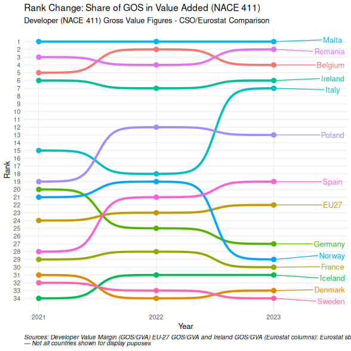

# All figures in this post are computed from frozen copies of the primary
# data, committed to this repository under data/ with a manifest of MD5
# hashes and refresh dates. The site build performs no network calls, so
# published figures cannot drift when Eurostat or the CSO revise a series.
# The exact code that produced the frozen copies:
eurostat_raw <- eurostat::get_eurostat('sbs_ovw_act',
filters = list(nace_r2 = c('F411','F412')),
stringsAsFactors = TRUE,
time_format = 'num')
sbs_labelled <- eurostat::label_eurostat(eurostat_raw)
eurostat_pop_raw <- eurostat::get_eurostat('tps00001',
filters = list(time = c('2022')),
stringsAsFactors = TRUE,
time_format = 'num')
cso_CNAPA01_raw <- csodata::cso_get_data("CNAPA01")
cso_BAA12_raw <- csodata::cso_get_data("BAA12")
cso_GPIIA04 <- csodata::cso_get_data("GPIIA04")
cso_GPIIA05 <- csodata::cso_get_data("GPIIA05")
cso_HPM03 <- csodata::cso_get_data("HPM03")
cso_DEA08 <- csodata::cso_get_data("DEA08")
# Refresh procedure: Rscript data/refresh.R (from the site root), review
# the printed diff and `git diff posts/2026-06-10-housing_1/data/csv/`,
# verify the prose still matches the tables, then commit.
For over a decade, the public narrative surrounding the Irish housing crisis has been dominated by the concept of “financial viability.” Lobbying bodies, institutional funds, and developer consortiums consistently argue that escalating costs make residential construction a low-margin, high-risk endeavour requiring state intervention, tax waivers, and buyer subsidies. This report tests that claim against the data, and finds it doesn’t hold.
Ten years of CSO National Accounts data (CNAPA01), cross-validated against Eurostat Structural Business Statistics (sbs_ovw_act, updated 10 March 2026), reveals that Irish property developers (NACE 411) have retained an average gross operating surplus of 83.1% of value added across 2015–2024, accumulating over €8.1 billion in corporate profit. The Eurostat dataset (into which Ireland’s own CSO data feeds directly) independently confirms a 2022 GOS/GVA of 81.1% for Ireland’s NACE F41.1, against an EU-27 average of 64.0% on the identical metric.
This edition adds two significant new analytical layers. First, a complete 34-country Eurostat ranking of developer GOS/GVA — allowing Ireland to be positioned precisely within the European distribution. Second, a direct engagement with the most sophisticated counter-argument: that land price inflation, not developer behaviour, is the true driver of housing costs. The data shows these aren’t competing explanations. They are two layers of the same extraction system, and Ireland’s per-capita developer surplus of €199 per person (vs the EU-27 average of €49) persists even after accounting for inflated land input costs.
Eurostat-confirmed value margin: Ireland’s NACE F41.1 GOS/GVA of 81.1% (2022) is drawn directly from Eurostat sbs_ovw_act, the same dataset used for all cross-country comparisons. It ranks Ireland 7th of 34 European countries on this metric, 17 percentage points above the EU-27 average of 64.0%.
Per-capita extraction: Ireland generates €199 per person in NACE F41.1 gross operating surplus — 4.1× the EU-27 average of €49. France (€60), Germany (€46), and Spain (€83) all extract far less despite larger, higher-cost land markets.
The land price mechanism confirmed: CSO data (ARA02 & RZLPA01) shows Irish residentially zoned land trading at 18–27× agricultural land value nationally, and at 64× in Dublin in 2024 (€643k vs €24k per acre). This planning-permission uplift is the primary input to the developer value margin, but Irish developers capture a disproportionate share of it relative to EU peers even after paying those inflated land prices.
Two-layer extraction: The system operates through a landowner layer (rezoning windfall) and a developer layer (planning-permission monopoly margin). Policy that addresses only one layer leaves the other intact.
This analysis uses two complementary metrics drawn from datasets that share the same underlying Irish data. The relationship between them is central to reading the cross-country comparisons correctly, and to understanding why the most common counter-argument (that the margin is ‘only’ on a small value-added base) misses the point.
The Gross Operating Rate (GOR) measures Gross Operating Surplus as a percentage of total Turnover. It is Eurostat’s primary cross-country comparability metric. Ireland’s NACE F41.1 GOR of 17.57% (2022) sits above the EU-27 average of 12.18%, ranking 9th of 34 countries. On this metric alone, Ireland is elevated but not extreme — Malta (34.07%), Switzerland (24.62%), and Greece (22.49%) rank higher.
Ireland NACE 411 GOR (2022): 17.57% | EU-27 Average: 12.18% | Source: Eurostat sbs_ovw_act
The Value Margin (Gross Operating Surplus as a percentage of Gross Value Added) answers the labour-versus-capital distribution question: of every euro of new wealth created, how much goes to workers and how much is retained as profit? This metric is now available from two independent sources for Ireland: CSO CNAPA01 (National Accounts) and Eurostat sbs_ovw_act (GOS_AV_PC indicator). Both confirm the same structural picture.
Ireland NACE F41.1 GOS/GVA (Eurostat, 2022): 81.1% | EU-27 Average: 64.0% | Source: Eurostat sbs_ovw_act (GOS_AV_PC)
Ireland NACE 411 Value Margin (CSO, 10-yr avg): 83.1% | Source: CSO CNAPA01
Ireland’s GOR (17.57%) and its GOS/GVA (81.1%) appear to diverge sharply. This isn’t a contradiction; it is diagnostic information. The GOR is suppressed relative to GOS/GVA because developer turnover is large: it includes the full inflated land transaction value as revenue. The GOS/GVA strips out purchased inputs and asks what share of newly created value goes to capital versus labour. An 81.1% answer means workers receive less than 19 cents for every euro of new economic value the sector generates.
The gap between the two metrics is itself a map of the land price inflation mechanism. High turnover relative to GOS (producing a moderate GOR) reflects high land input costs. High GOS relative to GVA (producing an extreme value margin) reflects near-zero labour content in the value-creation process. Both are features of a planning-uplift capture business, not a production business.
The table below presents Irish developer and builder data from CSO CNAPA01 alongside the Eurostat SBS GOS/GVA series for both the EU-27 average and Ireland (from sbs_ovw_act, indicator GOS_AV_PC). The Eurostat column for Ireland cross-validates the CSO National Accounts figure and confirms both datasets are measuring the same structural reality.
distribution_surplus_eurostat <- eurostat_raw_labelled|>
filter(var %in% c("Share of gross operating surplus in value added - percentage","Gross Operating Rate","Gross Operating Surplus"))
distribution_surplus_cso <- cso_CNAPA01|>
pivot_longer(cols = -c(NACE.Rev.2.Sector,year,source,nace_code),
values_to = "value",
names_to = "var")|>
transmute(year,
value,
nace = NACE.Rev.2.Sector,
var,
source,
nace_code,
geo = "Ireland")
distribution_surplus <- rbind(distribution_surplus_cso,distribution_surplus_eurostat)
distribution_surplus_euro_avg <- distribution_surplus |>
filter(
var %in% c("Share of gross operating surplus in value added - percentage", "Gross Operating Rate", "Gross Operating Surplus"),
nace_code == 411,
geo == "European Union - 27 countries (from 2020)"
) |>
select(-nace, -nace_code, -geo)|>
pivot_wider(
names_from = c(var),
values_from = "value"
)|>
rename(
Year = year,
`European Union - 27 countries Avg_(GOS/GVA)` = `Share of gross operating surplus in value added - percentage`,
`European Union - 27 countries Avg_(GOR)` = `Gross Operating Rate`,
`European Union - 27 countries Avg_(GOS)` = `Gross Operating Surplus`
)|>
select(-source)
distribution_surplus |>
filter(
var %in% c("Share of gross operating surplus in value added - percentage", "Gross Operating Rate", "Gross Operating Surplus"),
nace_code == 411,
geo == "Ireland"
) |>
select(-nace, -nace_code, -geo) |>
pivot_wider(
names_from = c(var),
values_from = "value"
)|>
rename(
Year = year,
`Share of gross operating surplus in value added (GOS/GVA)` = `Share of gross operating surplus in value added - percentage`,
`Gross Operating Rate (GOR)` = `Gross Operating Rate`,
`Gross Operating Surplus (GOS)` = `Gross Operating Surplus`
)|>
pivot_longer(cols = -c(Year,source),
names_to = 'var',
values_to = "value")|>
pivot_wider(names_from = c(var,source),
values_from = value)|>
select(-`Gross Operating Rate (GOR)_CNAPA01`)|>
merge(distribution_surplus_euro_avg,
by = 'Year')|>
lt() |>
lt_move(~ `Gross Operating Surplus (GOS)_CNAPA01` + `Gross Operating Surplus (GOS)_sbs_eurostat`, after = "Year") |>
lt_header(
title = "Developer (NACE 411) Gross value figures",
subtitle = "CSO/Eurostat comparison"
) |>
lt_spanner() |>
lt_sub(missing = "—") |>
lt_note("*Sources: Developer Value Margin (GOS/GVA) and Profit (GOS €m): CSO CNAPA01, data.cso.ie/table/CNAPA01, published September 2025 (CSO Frontier Series Output). 18 September 2025. EU-27 GOS/GVA and Ireland GOS/GVA (Eurostat columns): Eurostat sbs_ovw_act indicator GOS_AV_PC, NACE F41.1, updated 10/03/2026. — denotes data not yet available.*")
The Eurostat GOS/GVA for Ireland (81.1% in 2022, 80.5% in 2023) closely tracks the CSO CNAPA01 value margin (82.3% in 2022, 78.9% in 2023). The small divergence reflects timing differences in data transmission and minor methodological adjustments between the national accounts and SBS frameworks. The direction and magnitude are identical. This cross-validation eliminates any possibility that the high Irish value margin is an artefact of one dataset’s methodology.
eurostat_raw_labelled |>
filter(
var == "Share of gross operating surplus in value added - percentage"
) |>
arrange(desc(value)) |>
select(geo, value,year,nace_code) |>
pivot_wider(names_from = c(year,nace_code),
values_from = "value")|>
select(
geo,
starts_with("2021"),
starts_with("2022"),
starts_with("2023"),
everything()
)|>
lt() |>
lt_style("geo", test = "v => v == 'Ireland'", class = "Ire") |>
lt_style("geo", test = "v => v == 'Denmark'", class = "Den") |>
lt_css(
.Ire= list(
color = "blue"
),
.Den= list(
color = "red"
)
)|>
lt_header(
title = "EU Developer and Constrution Sector Profitability Ranking",
subtitle = "NACE F41.1 and F41.2 GOS/GVA, 2022 — all 34 Eurostat countries and Norway"
) |>
lt_spanner()|>
lt_sub(missing = "—") |>
lt_note("*Source: Eurostat sbs_ovw_act, GOS_AV_PC indicator, NACE F41.1/2, Updated 10/03/2026.*")
The EU-27 average GOS/GVA for NACE F41.1 has fallen from 65.8% (2021) to 64.0% (2022) to 61.9% (2023), a clear downward trend as interest rate rises and cost inflation compress developer margins across Europe. Ireland’s figure has also declined, from 86.5% (2021) to 81.1% (2022) to 80.5% (2023) to 76.3% (2024 from CNAPA01). The gap between Ireland and the EU average is therefore not narrowing; it is structurally entrenched and, on the most recent data, widening. But the direction of Ireland’s margin deserves direct engagement, because it will be cited (and has already been cited in informal industry commentary) as evidence that the market is self-correcting and structural intervention is unnecessary.
The argument runs: developer margins are declining from their peaks; the housing crisis is producing its own solution through competitive market dynamics; state intervention risks disrupting a correction already underway. This argument fails on five specific analytical grounds, each of which is directly addressable from the data in this report.
First, the baseline is extraordinary: A margin declining from 89.5% (2017) to 76.3% (2024) is still the 7th highest in the EU out of 34 countries on the Eurostat GOS/GVA measure. The relevant comparison isn’t Ireland now versus Ireland at its peak, but Ireland now (76.3%) versus the EU average now (61.9%). The gap has barely moved: Ireland was 17pp above the EU average in 2021, 17pp above in 2022, and 18.6pp above in 2023. A sector ‘tending toward EU averages’ from 76% would need to reach 62% to arrive there. At the current rate of convergence — approximately 1–2 percentage points per year if the trend continues — that is a decade away. During that decade, on current extraction rates, a further €7–8 billion in developer surplus would be accumulated.
# 1. Prepare the data
bump_data <- eurostat_raw_labelled |>
filter(
var == "Share of gross operating surplus in value added - percentage",
nace_code == 411,
year <2024
) |>
group_by(year) |>
mutate(rank = rank(-value, ties.method = "first"),
geo = if_else(geo == "European Union - 27 countries (from 2020)",
"EU27",
geo),
year = as.integer(year)) |>
ungroup()
# Define the countries you want to keep
selected_countries <- c("Ireland", "EU27", "France", "Germany", "Spain", "Italy","Malta","Poland","Belgium","Denmark","Sweden","Iceland","Norway","Romania")
bump_data_filtered <- bump_data |>
filter(geo %in% selected_countries)
# 2. Plotting
ggplot(bump_data_filtered, aes(x = year, y = rank, color = geo)) +
geom_bump(size = 1.5) +
geom_point(size = 3) +
# Use geom_text_repel for clean labels at the end of the lines
geom_text_repel(
data = bump_data_filtered |> filter(year == max(year)),
aes(label = geo),
nudge_x = 0.5,
direction = "y"
) +
scale_y_reverse(breaks = 1:max(bump_data_filtered$rank)) +
scale_x_continuous(breaks = seq(min(bump_data_filtered$year), max(bump_data_filtered$year), 1)) +
theme_minimal() +
labs(
title = "Rank Change: Share of GOS in Value Added (NACE 411)",
subtitle = "Developer (NACE 411) Gross Value Figures - CSO/Eurostat Comparison",
x = 'Year',
y = "Rank",
caption = "*Sources: Developer Value Margin (GOS/GVA) EU-27 GOS/GVA and Ireland GOS/GVA (Eurostat columns): Eurostat sbs_ovw_act indicator GOS_AV_PC, NACE F41.1, updated 10/03/2026. <br> — Not all countries shown for display puposes*"
) +
theme(
legend.position = "none",
plot.caption = element_markdown(hjust = 0), # requires 'ggtext' package
panel.grid.minor = element_blank()
)
#> Using `size` aesthetic for lines was deprecated in ggplot2 3.4.0.
#> Please use `linewidth` instead.

Second — per-capita extraction isn’t compressing: Ireland’s €199 per person in F41.1 developer surplus (2022 Eurostat) against the EU average of €49 is a structural measure, not a cyclical one. France generates €60 per capita, Germany €46. These aren’t countries whose developer sectors have been recently compressed by interest rate cycles; they have structurally different institutional arrangements. The per-capita gap reflects institutional design, not macroeconomic conditions.
Third, the EU benchmark is itself declining: The EU-27 average GOS/GVA for NACE F41.1 is falling (65.8% → 64.0% → 61.9%) because other EU member states are experiencing the margin compression that one would expect in a competitive market responding to input cost inflation. Ireland’s margins are falling more slowly than the EU average is falling, meaning the structural divergence is widening even as both lines trend down. A race where both runners are slowing but one is slowing less isn’t convergence.
Fourth — GOS absolute values aren’t compressing: Developer GOS in absolute terms fell from €1,125m (2022) to €953m (2023) to €949m (2024), a decline of approximately 16% over two years. This is real. But it returns GOS to 2019 levels (€903m). The decade-long accumulation of €8.167 billion isn’t reversed by two years of margin normalisation. The structural position — land bank acquired at agricultural values, planning permissions secured at minimal cost, subsidy architecture intact — remains entirely in place.
Fifth, the policy environment is actively arresting convergence: The 9% VAT rate (Budget 2026), the Croí Cónaithe expansion, the LDA forward-purchase programme, and the ongoing Help-to-Buy and First Home Scheme extensions are all supply-side and demand-side interventions that sustain or restore developer margins precisely when market conditions might otherwise compress them. The state isn’t allowing the market to self-correct; it is actively intervening to prevent that correction from completing. A declining margin that is simultaneously being supported by five distinct state subsidy mechanisms isn’t evidence of market self-correction. It is evidence of successful rent-seeking.
The correct response to a declining margin that remains structurally elevated, is being actively supported by state subsidies, and is converging toward the EU average at a pace of decades rather than years isn’t to wait. It is to implement the structural interventions in Section 9 now, while the political conditions for doing so are more favourable than they will be if the market continues to consolidate around a smaller number of larger developers with deeper state relationships.
The CSO’s September 2025 release of ‘Construction: A National Accounts Perspective 2024’ provides Compensation of Employees (COE) data alongside GOS for each NACE sub-sector. The ratio of wages to profit across sub-sectors is the most direct illustration of what kind of economic activity is actually taking place in each.
cso_CNAPA01%>%
mutate(`COE as % of GOS` = `Compensation of Employees`/`Gross Operating Surplus`*100)|>
filter(year == 2024,
nace_code %in% c(411,412,432))|>
transmute(`GOS (profit) — 2024` = `Gross Operating Surplus`,
`COE (wages + employer PRSI) — 2024` = `Compensation of Employees`,
`COE as % of GOS`,
NACE.Rev.2.Sector)|>
pivot_longer(cols = -NACE.Rev.2.Sector,
names_to = "Metric",
values_to = "value")|>
pivot_wider(names_from = NACE.Rev.2.Sector,
values_from = value)|>
mutate(Interpretation = c("Absolute profit by sub-sector","Total labour cost paid","Workers earn 28c per €1 of developer profit; €1.39 per €1 of builder profit"))|>
lt()|>
lt_note("Source: CSO CNAPA01 GOS and COE by NACE sub-sector, 'Construction: A National Accounts Perspective 2024', CSO, 18 September 2025 (Frontier Series Output). COE includes wages, salaries and employer social contributions.")
For every €1 million of profit extracted by the developer sector, workers receive €285,000 in wages. For every €1 million of builder profit, workers receive €1,391,000. For Electrical and Plumbing, €3,193,000. The developer layer isn’t a high-employment sector that happens to be profitable; it is a capital-extraction mechanism. This is exactly why viability arguments made by NACE 411 entities about labour costs don’t apply to the sub-sector making them: NACE 411’s own labour cost burden is minimal by construction sector standards.
The Labour & Earnings page of the same CSO release provides an additional dimension. Total construction wages across all sub-sectors were €7.6 billion in 2024, supporting 171,676 workers at a sector average of approximately €44,000 per person. NACE 411’s COE of €270 million divided across approximately 8,572 persons engaged in 2022 (Eurostat sbs_ovw_act, EMP_NR) yields a GOS per person of approximately €118,000 — against the EU-27 F411 average of €60,108 on the same metric. The Eurostat ‘persons engaged’ measure is broader than the BAA12 employee count (3,858 in 2019), and from 2022 appears to include sub-contracted professionals; using it ensures cross-country comparability. Even on this broader headcount, Irish NACE F411 generates roughly 2× the EU average GOS per person. The ‘struggling small developer’ narrative is difficult to reconcile with a sub-sector generating €97,000–€118,000 in gross operating surplus per person engaged.
Sources: COE and GOS data — CSO CNAPA01, ‘Construction: A National Accounts Perspective 2024’, 18 September 2025. Total sector wages (€7.6bn) and employment (171,676) — Labour & Earnings chapter, same release. NACE 411 employee count (~3,858) — CSO BAA12 Annual Enterprise Survey. All calculations derived from published primary data.
The CSO CNAPA01 release also publishes Gross Mixed Income (GMI) (the income of self-employed persons) for each sub-sector. This is the metric that would capture income flowing to the ‘small developer’ cited in counter-arguments: the sole trader, the family firm, the small enterprise where owner income and business profit are mixed.
The GMI data for NACE 411 runs at between €22 million and €40 million per year across the entire 2015–2024 period. In 2024 it was approximately €23 million. Against a GOS of €949 million, GMI represents just 2.4% of total surplus generated. The overwhelming majority (97.6%) of the value extracted by NACE 411 flows to corporate entities, not self-employed individuals.
This conclusively rebuts the counter-argument that the €8.167 billion in developer GOS represents the modest earnings of thousands of small sole traders. Self-employed developer income is captured in GMI and is negligible at €23–40m per year throughout the decade. The GOS (the €8.167 billion) is corporate profit. The ‘average small developer earning €247k’ framing misattributes corporate surplus to individual proprietors. The CSO’s own published data makes this distinction explicit and quantifies it precisely.
cso_CNAPA01|>
filter(nace_code %in% c(411,412,432))|>
transmute(NACE.Rev.2.Sector,
`Gross Mixed Income` = paste0(`Gross Mixed Income`|>
round(2),"m"),
Year = year)|>
pivot_wider(names_from = NACE.Rev.2.Sector,
values_from = `Gross Mixed Income`)|>
lt()|>
lt_header("Gross Mixed Income by NACE sub-sector(EUR)")|>
lt_note("Source: CSO CNAPA01, 'Construction: A National Accounts Perspective 2024', CSO, 18 September 2025. NACE 411,412,432 GMI")
The new Eurostat SBS dataset (sbs_ovw_act, updated 10 March 2026, indicators EMP_NR and ENT_NR) now provides persons-engaged and enterprise counts for NACE F411 by country across 2021–2024. This data enables a cross-country GOS-per-person comparison that wasn’t previously possible. The CSO BAA12 Annual Enterprise Survey provides additional historical headcounts from 2008–2019, enabling the crash and recovery analysis below.
An important methodological note: the Eurostat ‘persons engaged’ figure (EMP_NR) is broader than the BAA12 ‘persons employed’ count. BAA12 confirmed 3,858 persons in NACE 411 in 2019; Eurostat shows 4,065 for 2021 (consistent) but then 8,572 in 2022 and 9,001 in 2023 — more than double the 2021 figure. This sharp increase likely reflects a broadening of the Irish SBS submission scope from 2022 to include sub-contracted professionals and freelancers alongside direct employees. For cross-country comparability this report uses the Eurostat EMP_NR series throughout; for COE-per-person calculations the narrower BAA12 employee count is noted separately.
selected_countries <- c("European Union - 27 countries (from 2020)", "Belgium", "Denmark", "Germany", "Ireland", "Spain", "France", "Malta", "Netherlands", "Austria", "Poland", "Slovenia", "Slovakia", "Finland")
eurostat_raw_labelled|>
filter(geo %in% selected_countries,
var %in% c("Persons employed - number","Gross Operating Surplus","Share of gross operating surplus in value added - percentage"),
year == 2022,
nace_code == 411)|>
pivot_wider(names_from = var,
values_from = value)|>
rename(Country = geo)|>
transmute(Country,`GOS €m`=`Gross Operating Surplus`,`Persons Engaged`=`Persons employed - number`,`GOS per Person €`=`Gross Operating Surplus`/`Persons employed - number`*1000000,`OS/GVA (Value Margin)`=`Share of gross operating surplus in value added - percentage`/100)|>
arrange(desc(`GOS per Person €`))|>
lt()|>
lt_format(columns = c("GOS per Person €","GOS €m","Persons Engaged"),big_mark = ',',decimals = 0)|>
lt_format("OS/GVA (Value Margin)",decimals = 0,percent = TRUE)|>
lt_note("Source: Eurostat Structural Business Statistics, dataset sbs_ovw_act, DATAFLOW ESTAT:SBS_OVW_ACT(1.0), Indicators: GOS_MEUR (Gross operating surplus — million euro), EMP_NR (Persons employed — number), GOS_AV_PC (Share of gross operating surplus in value added — percentage). NACE: F411 — Development of building projects. Reference year: 2022. GOS per person calculated as (GOS €m × 1,000,000) / persons engaged.")
Ireland’s NACE F411 generates €118,198 in gross operating surplus per person engaged — approximately 2× the EU-27 average of €60,108 on the same Eurostat metric. The Netherlands (€165,180) and Malta (€185,443) generate more per person on this measure, but both are small markets with specific structural characteristics. Among comparable economies, Ireland’s per-person GOS is the highest: Ireland (€118k), Belgium (€100k), Germany (€85k), France (€81k). The argument that Irish developer margins reflect genuinely higher costs (in labour, materials, or finance) would predict that GOS per person should be similar to or below European peers after accounting for those costs. It isn’t.
cso_BAA12_raw <- readRDS("data/BAA12_raw.rds")
tab_1 <- cso_BAA12_raw|>
filter(grepl("411",Nace.Rev.2.Activity),
Statistic == 'Persons Engaged - Total')|>
select(-Nace.Rev.2.Activity)|>
pivot_longer(cols = -Statistic,
names_to = "Year",
values_to = "value")|>
pivot_wider(names_from = Statistic,
values_from = value)|>
rename(`Persons (BAA12)` = `Persons Engaged - Total`)
tab_2 <- cso_CNAPA01|>
filter(nace_code == 411)|>
transmute(`GOS €m (CNAPA01)` = `Gross Operating Surplus`,
`GVA €m (CNAPA01)` = `Gross Value Added in Basic Prices`,
`Wages per €1m GOS` = `Compensation of Employees`/`Gross Operating Surplus`*1000000,
Year = year)
merge(tab_1,tab_2,
by = "Year")|>
transmute(Year,`Persons (BAA12)`,`GOS €m (CNAPA01)`,`GVA €m (CNAPA01)`,`GOS € per person` = `GOS €m (CNAPA01)`/`Persons (BAA12)`*1000000,
`GVA € per person` = `GVA €m (CNAPA01)`/`Persons (BAA12)`*1000000,`Wages per €1m GOS`)|>
lt()|>
lt_format(columns = c("Persons (BAA12)","GOS €m (CNAPA01)","GOS € per person","GVA € per person","Wages per €1m GOS"),big_mark = ',',decimals = 0)|>
lt_note("Sources: Persons engaged — CSO BAA12 Annual Enterprise Survey, NACE 411, 2015–2019 (narrower definition: employees plus proprietors, excludes sub-contractors). GOS and GVA — CSO CNAPA01, same years. Per-person figures calculated from primary data. Note: BAA12 headcounts are consistent with the Eurostat EMP_NR series through 2021 but diverge from 2022 when Eurostat's Ireland submission appears to broaden scope.")
cso_BAA12_raw|>
filter(grepl("411|412",Nace.Rev.2.Activity),
Statistic %in% c('Persons Engaged - Total',"Construction Enterprises"),)|>
pivot_longer(cols = -c(Statistic,Nace.Rev.2.Activity),
names_to = "Year",
values_to = "value")|>
pivot_wider(names_from = c(Nace.Rev.2.Activity,Statistic),
values_from = value)|>
lt()|>
lt_move(c( "Development of building projects (411)_Construction Enterprises", "Development of building projects (411)_Persons Engaged - Total"),
after = "Year")|>
lt_spanner()|>
lt_header('Construction and Developer Employment/Enterprises ')|>
lt_note("Sources: NACE 411 and 412 persons engaged 2008–2019 — CSO BAA12 Annual Enterprise Survey.")
The BAA12 historical employment series reveals the scale of the 2008–2012 crash. NACE 412 (builders) collapsed from 55,768 persons in 2008 to 21,129 in 2012, a 62% reduction. NACE 411 (developers) collapsed from 4,316 to 1,901 (a 56% reduction. By 2019, NACE 412 had recovered to 37,766) still 32% below 2008 peak. NACE 411 recovered to 3,858 in 2019 — just 11% below peak, effectively at pre-crash levels.
But the recovery data tells the structurally important story: despite the crash, within three years of recovery commencing, NACE 411’s GOS/GVA was back above 78–83%. The sector bore the crash, lost half its workforce, and resumed extraction at the same structural rate — confirming the margin structure isn’t cyclical but institutional. It reasserts itself once activity resumes because the planning-permission monopoly conditions that produce it are unchanged.
A further finding: in 2009 (the worst year of the crash) the number of NACE 411 enterprises actually increased from 2,416 to 3,749, even as employment fell from 4,316 to 3,428. This reflects the proliferation of Special Purpose Vehicles (SPVs) during the downturn: developers incorporated separate legal entities for distressed projects to manage liability and ring-fence assets from NAMA. The Eurostat SBS now shows 5,008–5,271 enterprises in NACE F411 in 2022–2024 against only 8,572–9,001 persons engaged — approximately 1.7 persons per enterprise. This is the mathematical fingerprint of a sector dominated by project-specific SPVs, not operational businesses with substantial workforces.
The Eurostat employment data raises a question that deserves direct engagement: if NACE F411 in Ireland nearly doubled its persons engaged between 2021 and 2022 (from 4,065 to 8,572) while GOS remained essentially flat (€874m to €873m across 2021–2023) and the number of enterprises grew only modestly (4,701 to 5,135), is the sector becoming less efficient? And if so, what does that tell us about what the sector actually does?
The first analytical task is to determine whether the doubling reflects a real change in the developer workforce or a methodology change in the SBS submission. The evidence strongly supports the latter as the primary explanation. The number of enterprises grew by only 9% (4,701 → 5,135) while persons doubled, which is inconsistent with organic workforce growth, where enterprises and headcounts typically move together. GOS and GVA grew only 2.4% and 2.4% respectively over the same period. The GOS/GVA margin moved barely at all (82.5% → 80.5%). If the sector had genuinely doubled its workforce, one would expect to see some change in output or margins. None is visible. The most parsimonious interpretation is that from 2022 the Irish CSO SBS submission broadened to capture sub-contracted professionals — planners, quantity surveyors, solicitors, and project managers working on project-specific contracts — who were previously excluded from the BAA12 count.
This interpretation is consistent with the COE data. NACE F411 COE (wages and employer social contributions from CNAPA01) rose from €181m (2021) to €270m (2024), a 49% increase. If persons engaged doubled, COE per person approximately halved from ~€45k to ~€30k. This is consistent with the addition of lower-paid sub-contractors to the denominator while the core employee wage bill grew more modestly. The €270m COE divided across ~4,000 core employees yields approximately €67,500 per person — consistent with professional service wages in the Irish market. Divided across 9,000 total persons it yields ~€30,000 — consistent with including part-time or project-specific sub-contractors.
Even taking the methodology change as the primary explanation, the derived productivity metrics are analytically significant. GVA per person in NACE F411 fell from €261,000 (2021) to €146,000 (2022) to €120,000 (2023). Turnover per person fell from €1,214,000 (2021) to €673,000 (2022) to €625,000 (2023). On any conventional measure of labour productivity, the developer sector became dramatically less productive per person between 2021 and 2023.
But this productivity collapse coexists with a completely stable GOS/GVA margin of 80–83%. In a competitive market where efficiency determines profitability, falling productivity should compress margins. In a rent-capture model, it doesn’t because the margin isn’t derived from productive efficiency. It is derived from holding a state-granted planning permission, which appreciates in value regardless of how many or how few people are employed to manage it. You don’t need to be efficient to own a planning permission. You need to be the entity to whom the state grants one.
The enterprise-level analysis reveals a further structural anomaly. In 2022, Ireland had 5,008 NACE F411 enterprises with 8,572 persons engaged — 1.7 persons per enterprise. Germany had 7,475 enterprises with 45,170 persons — 6.0 persons per enterprise. France had 26,001 enterprises with 50,519 persons — 1.9 persons per enterprise. The EU-27 average was 2.3 persons per enterprise.
selected_countries <- c("European Union - 27 countries (from 2020)", "Denmark", "Germany", "Ireland", "Spain", "France", "Malta", "Netherlands","Poland")
eurostat_raw_labelled|>
filter(nace_code == 411,
var %in% c("Enterprises - number","Persons employed - number","Value added - million euro"),
geo %in% selected_countries,
year == 2022)%>%
select(-nace,-source,-nace_code,-year)|>
pivot_wider(names_from =var,
values_from = value)|>
rename(Country = geo,
`GVA €m` = `Value added - million euro`)|>
mutate(`Persons per Enterprise` = `Persons employed - number`/`Enterprises - number`,
`GVA € per Enterprise` = `GVA €m`/`Enterprises - number`*1000000,
`GVA € per Person` = `GVA €m`/`Persons employed - number`*1000000)|>
arrange(desc(`GVA € per Enterprise`))|>
lt()|>
lt_format(c("Enterprises - number", "Persons employed - number","GVA €m","GVA € per Enterprise", "GVA € per Person"),big_mark = ",",decimals = 0)|>
lt_format("GVA € per Enterprise",decimals = 1)|>
lt_note("Source: Eurostat sbs_ovw_act, indicators ENT_NR and EMP_NR and AV_MEUR, NACE F411, 2022, updated 10/03/2026. GVA per enterprise calculated from AV_MEUR / ENT_NR.")
Ireland’s 1.7 persons per enterprise is essentially the same as Malta’s 1.6, the EU’s other high-margin outlier. Both are dominated by single-purpose SPVs: legal entities established for one project, employing almost no one directly, existing primarily to hold a planning permission and the land value uplift it creates. Germany’s 6.0 persons per enterprise reflects a very different model — actual operating development businesses with significant permanent workforces undertaking multiple concurrent projects. The difference in GVA per enterprise (Ireland €250k, Germany €816k) reflects this: German developer enterprises are genuine operating businesses generating substantial value per entity. Irish developer enterprises are overwhelmingly project vehicles generating modest per-entity value but capturing almost all of it as profit.
NACE F411 in Ireland isn’t inefficient in the sense that a poorly-run factory is inefficient — wasting inputs to produce a given output. It is structurally non-productive: the ‘output’ of the developer sector isn’t physical production but the capture of state-granted planning permission value. Labour isn’t the key input to this process and can’t be scaled to increase output, because the binding constraint isn’t labour; it is the rate at which the planning system grants permissions. No amount of additional professional headcount in the developer sector increases the number of planning decisions that An Bord Pleanála or local authorities can make. The sector employs more lawyers and planners to navigate the planning queue, but more lawyers and planners don’t expand the queue’s capacity. They just redistribute which applications succeed.
This has a precise policy implication. The argument that developer margins must be high to attract capital into the sector, the standard defence of high GOS/GVA as a necessary incentive — rests on the assumption that capital and labour can be deployed to increase housing output if sufficiently rewarded. The employment data shows this isn’t happening. Between 2021 and 2023, Irish NACE F411 persons engaged doubled, GOS remained flat, and GVA grew 2.4%. The sector absorbed significantly more labour without producing significantly more output, because the planning permission bottleneck (not developer workforce capacity) determines supply. High margins don’t solve the housing crisis in a planning-constrained system. They simply accumulate in the hands of whoever holds the permissions.
This analysis draws on Eurostat sbs_ovw_act (EMP_NR, ENT_NR, AV_MEUR, GOS_MEUR, NETTUR_MEUR, NACE F411 and F412, Ireland and comparator countries, 2021–2023) and CSO CNAPA01 (COE by NACE sub-sector, 2021–2024). The interpretation of the 2021–2022 headcount jump as a methodology change in the Irish SBS submission is the authors’ inference from the absence of corresponding output growth; this cannot be confirmed without access to the CSO’s internal SBS methodology documentation.
The expanded Eurostat SBS dataset (sbs_ovw_act, updated 10 March 2026, all available indicators) provides six independent metrics that, taken together, constitute the most complete statistical portrait of Irish NACE F411 as a business model yet assembled from primary data. Each metric is calculated by Eurostat from the same underlying SBS framework that generates the GOS/GVA figures used throughout this report. None requires any calculation or inference beyond what Eurostat publishes directly. The six findings are presented in order of analytical impact.
The Wage Adjusted Labour Productivity (WALP) indicator is Eurostat’s own published measure of the distribution of returns between capital and labour within a sector. A WALP of 100% indicates parity between capital and labour returns relative to the sector average. Values above 100% indicate capital earns proportionately more than labour; values below 100% indicate the reverse. The EU-27 average WALP for NACE F411 in 2022 is 208.0%, meaning capital earns roughly twice what labour earns in the average EU developer sub-sector. Ireland’s WALP for NACE F411 in 2022 is 500.1%. Capital earns five times what labour earns. Only Malta, at 875.5%, is higher in the EU. Denmark, operating a public procurement model, records 27.6% — near parity.
selected_countries <- c("European Union - 27 countries (from 2020)", "Denmark", "Germany", "Ireland", "France", "Malta", "Netherlands", "Finland")
eurostat_raw_labelled|>
filter(nace_code == 411,
var %in% c("Wage adjusted labour productivity - percentage"),
year <2024,
geo %in% selected_countries)%>%
select(-nace,-source,-nace_code,-var)|>
mutate(value = value/100)|>
pivot_wider(names_from =c(year),
values_from = value)|>
mutate(Interpretation = case_when(geo == "Ireland" ~ "2nd highest — capital earns 5× what labour earns",
geo == "Malta" ~ "Highest EU outlier — tiny absolute base",
geo == "Netherlands" ~ "High but falling — competitive market pressures",
geo =="Germany" ~ "Above EU average — larger operating businesses",
geo == "European Union - 27 countries (from 2020)" ~ "Declining — labour gaining share across EU",
geo == "France" ~ "Below EU average — stronger labour protections",
geo == "Finland" ~ "Capital barely outearns labour",
geo == "Denmark" ~ "Near parity — public procurement model"))|>
rename(Country = geo)|>
arrange(desc(`2022`))|>
lt()|>
lt_format(c("2021","2022","2023"),percent = TRUE,decimals = 1)|>
lt_move(c("2021","2022","2023"),after = "Country")|>
lt_header("WALP Nace 41.1")|>
lt_note("Source: Eurostat sbs_ovw_act, indicator 'Wage adjusted labour productivity — percentage', NACE F411, all available countries, 2021–2023, updated 10/03/2026.")
This finding is analytically significant because it is Eurostat’s own published metric, not a ratio calculated by this report. When two independent Eurostat measures — GOS/GVA (the share of surplus in value added) and WALP (the capital/labour return ratio) — both place Ireland as a top-three EU outlier in NACE F411, the finding is confirmed from independent measurement frameworks using different underlying data. The GOS/GVA argument can’t be dismissed as a methodological artefact when WALP arrives at the same structural conclusion through a different calculation.
The investment rate — gross investment in tangible non-current assets as a percentage of GOS — measures how much of each year’s profit is reinvested into productive capacity. It is the direct test of the claim that high developer margins are necessary to fund future development activity. If high margins are a productive investment incentive, investment rates should be high. They aren’t.
selected_countries <- c("European Union - 27 countries (from 2020)", "Denmark", "Germany", "Ireland", "France", "Malta", "Netherlands", "Belgium", "Poland","Finland")
eurostat_raw_labelled|>
filter(nace_code == 411,
var %in% c("Gross Operating Surplus","Gross investment in tangible non-current assets - million euro" ),
year <2024,
geo %in% selected_countries)%>%
pivot_wider(names_from = var,
values_from = value)|>
mutate(invest_rate = `Gross investment in tangible non-current assets - million euro`/`Gross Operating Surplus`)|>
select(-nace,-source,-nace_code,-c("Gross investment in tangible non-current assets - million euro","Gross Operating Surplus"))|>
pivot_wider(names_from =c(year),
values_from = invest_rate)|>
mutate(`What This Means` = case_when(geo == "Ireland" ~ "8.3% Stable at 8% — pure extraction, nothing reinvested",
geo == "Malta" ~ "Volatile — small absolute base",
geo == "Netherlands" ~ "Moderate reinvestment",
geo =="Germany" ~ "Rising strongly — productive investment building",
geo == "European Union - 27 countries (from 2020)" ~ "EU developers reinvest majority of profit — rising trend",
geo == "France" ~ "Consistent reinvestment well above Irish rate",
geo == "Finland" ~ "High reinvestment — volatile but productive",
geo == "Denmark" ~ "Negative — public model, investment > surplus",
geo == "Belgium" ~ "Reinvests more than it earns — building for the long term",
geo == "Poland" ~ "Variable but consistently above Irish rate"))|>
rename(Country = geo)|>
arrange(desc(`2022`))|>
lt()|>
lt_format(c("2021","2022","2023"),percent = TRUE,decimals = 1)|>
lt_move(c("2021","2022","2023"),after = "Country")|>
lt_header("Gross Reinvested Nace 41.1")|>
lt_note("Source: Eurostat sbs_ovw_act, indicators 'Gross investment in tangible non-current assets — million euro' and 'Gross operating surplus — million euro', NACE F411, 2021–2023, updated 10/03/2026. Investment/GOS ratio calculated from primary data.")
Ireland’s investment rate has been essentially flat at 8.0–8.4% across all three years. The EU-27 average has been rising from 62% to 89% over the same period — other EU developer sectors are reinvesting growing proportions of their profit into productive capacity. Ireland’s proportion isn’t only the lowest in the EU; it is stable at the lowest level while every comparable economy’s rate is rising. This means the gap between Irish and EU reinvestment behaviour is widening, not narrowing. Every additional euro of Irish developer surplus generated in 2023 was 92 cents extracted and 8 cents reinvested. The standard defence of high margins (that developers need them to fund future investment) isn’t supported by what developers actually do with those margins.
The machinery investment figure is even more stark. Irish NACE F411 invested €31.4 million in machinery in 2021 — likely reflecting Glenveagh’s timber frame manufacturing facility, the only major capital equipment investment in the sector in recent years. In 2022 and 2023, machinery investment was zero. In two consecutive years, as Irish housing delivery was supposedly scaling up and state subsidies were flowing in record volumes, the developer sub-sector invested not a single euro in productive machinery. This is a paper-and-planning business, not a production business.
The average employee benefits expense — Eurostat’s measure of average annual wages and employer social charges per employee — reveals a finding that is counterintuitive and analytically significant: the Irish NACE F411 sub-sector, which generates the second-highest capital returns in the EU by WALP, pays its workers below the EU average for the same sub-sector.
selected_countries <- c("European Union - 27 countries (from 2020)", "Denmark", "Germany", "Ireland", "France", "Malta", "Netherlands", "Finland","Belgium","Poland")
eurostat_raw_labelled|>
filter(nace_code == 411,
var %in% c("Average employee benefits expense - thousand euro"),
year <2024,
geo %in% selected_countries)%>%
select(-nace,-source,-nace_code,-var)|>
mutate(value = value)|>
pivot_wider(names_from =c(year),
values_from = value)|>
mutate(Interpretation = case_when(geo == "Ireland" ~ "BELOW EU average and falling sharply",
geo == "Malta" ~ "Small market outlier",
geo == "Netherlands" ~ "Highest wages — competitive, regulated market",
geo =="Germany" ~ "Above EU average, productive sector",
geo == "European Union - 27 countries (from 2020)" ~ "Benchmark",
geo == "France" ~ "Strong worker protections, high wages",
geo == "Finland" ~ "High wages, low margins",
geo == "Denmark" ~ "Public model — workers well compensated",
geo == "Belgium" ~ "Above
EU average",
geo == "Poland" ~ "Lower-wage economy — expected"))|>
rename(Country = geo)|>
arrange(desc(`2022`))|>
lt()|>
lt_format(c("2021","2022","2023"),decimals = 1)|>
lt_move(c("2021","2022","2023"),after = "Country")|>
lt_header("Avg Wage €k")|>
lt_note("Source: Eurostat sbs_ovw_act, indicator ‘Average employee benefits expense — thousand euro’, NACE F411, 2021–2023, updated 10/03/2026.")
The sharp fall in the Irish average wage figure from €51.2k (2021) to €29.1k (2022) to €24.6k (2023) is partly explained by the methodology broadening — as more sub-contractors are included in the denominator, the average is diluted by lower-paid project workers. But even the 2021 figure (€51.2k, slightly above the EU average of €44.9k) places Ireland far below comparable Western European economies. France, the Netherlands, and Denmark all pay developer sector workers €70–€90k. Ireland pays €29–51k. The sub-sector with the highest GOS/GVA in Western Europe, generating €200+ per capita annually in surplus, pays its workforce at or below the EU sector average. Every euro of value created in Irish NACE F411 is distributed more aggressively toward capital and away from labour than in any comparable EU economy. Nothing in the economics forces this. It’s a structural choice, and the data confirms it.
The expenses on services provided through agency workers, expressed as a proportion of total employee benefits expense, reveals the most extreme Irish outlier in the entire dataset. Agency workers are temporary staff hired through third-party agencies rather than employed directly, a structure that eliminates employer obligations for long-term contracts, pension contributions, redundancy, and workforce continuity. In most EU economies, agency workers are a marginal component of professional services workforces.
selected_countries <- c("European Union - 27 countries (from 2020)", "Germany", "Ireland", "France", "Malta", "Netherlands", "Belgium", "Poland")
eurostat_raw_labelled|>
filter(nace_code == 411,
var %in% c("Employee benefits expense - million euro","Expenses on services provided through agency workers - million euro" ),
year <2024,
geo %in% selected_countries)%>%
pivot_wider(names_from = var,
values_from = value)|>
mutate(invest_rate = `Expenses on services provided through agency workers - million euro`/`Employee benefits expense - million euro`)|>
select(-nace,-source,-nace_code,-c("Expenses on services provided through agency workers - million euro","Employee benefits expense - million euro"))|>
pivot_wider(names_from =c(year),
values_from = invest_rate)|>
mutate(`What This Means` = case_when(geo == "Ireland" ~ " Agency = 26–35% of staff costs. 13–17× EU average",
geo == "Malta" ~ "Increasing but below Ireland",
geo == "Netherlands" ~ "Minimal",
geo =="Germany" ~ " Essentially no agency workers - permanent workforce",
geo == "European Union - 27 countries (from 2020)" ~ "Agency workers are marginal across the EU",
geo == "France" ~ " Minimal - employment protections constrain agency use",
geo == "Belgium" ~ "Increasing and diverging from EU average",
geo == "Poland" ~ "Variable but consistently above Irish rate"))|>
rename(Country = geo)|>
arrange(desc(`2022`))|>
lt()|>
lt_format(c("2021","2022","2023"),percent = TRUE,decimals = 1)|>
lt_sub("2023",missing = "—")|>
lt_move(c("2021","2022","2023"),after = "Country")|>
lt_header("Agency Staff % Nace 41.1")|>
lt_note("Source: Eurostat sbs_ovw_act, indicators ‘Expenses on services provided through agency workers — million euro’ and ‘Employee benefits expense — million euro’, NACE F411, Ratio calculated from primary data.")
Ireland’s NACE F411 entities spend 26–35% of their total staff costs on agency workers. This isn’t a professional services quirk; it is the financial fingerprint of the SPV model. Each development is structured as a separate legal entity. Rather than maintaining a permanent workforce of planners, solicitors, architects, and project managers, the SPV hires these professionals through agencies for the duration of the project and releases them when it ends. This structure eliminates fixed labour costs, concentrates all profit at the corporate level, and ensures that workers bear the risk of project completion rather than the developer entity. The EU average of 2% confirms this is an Irish structural choice, not a sectoral norm.
The labour costs per value added metric, the percentage of gross value added paid to workers in wages and social charges — is the most direct expression of the capital/labour split from the labour side. In the EU-27, the average developer sub-sector pays workers 27.8% of every euro of value created. In Ireland, workers receive 17.0%. The gap (10.8 percentage points) represents approximately €135 million per year at current Irish NACE F411 GVA levels that goes to capital in Ireland that would go to labour in the average EU developer sub-sector.
selected_countries <- c("European Union - 27 countries (from 2020)", "Denmark", "Germany", "Ireland", "France", "Malta", "Netherlands", "Finland","Belgium","Poland")
eurostat_raw_labelled|>
filter(nace_code == 411,
var %in% c("Labour costs per value added - percentage"),
year <2024,
geo %in% selected_countries)%>%
select(-nace,-source,-nace_code,-var)|>
mutate(value = value/100)|>
pivot_wider(names_from =c(year),
values_from = value)|>
mutate(Context = case_when(geo == "Ireland" ~ "Workers get 17 cents per €1. Rising but lowest in W. Europe",
geo == "Malta" ~ " Extreme capital concentration — structural outlier",
geo == "Netherlands" ~ "Near EU average",
geo =="Germany" ~ "Above EU average, productive sector",
geo == "European Union - 27 countries (from 2020)" ~ "Workers get 28 cents per €1 of value added",
geo == "France" ~ "Workers get 34 cents per €1 of value added",
geo == "Finland" ~ "High labour share — low capital returns",
geo == "Denmark" ~ "Labour costs > value added: public cost-centre model",
geo == "Belgium" ~ "Below EU average — moderate margins",
geo == "Poland" ~ "Lower-wage economy adjusts ratio"))|>
rename(Country = geo)|>
arrange(desc(`2022`))|>
lt()|>
lt_format(c("2021","2022","2023"),decimals = 1,percent = TRUE)|>
lt_move(c("2021","2022","2023"),after = "Country")|>
lt_header("Labour Costs/Value Added %")|>
lt_note("Source: Eurostat sbs_ovw_act, indicator ‘Labour costs per value added — percentage’, NACE F411, 2021–2023, updated 10/03/2026.")
The trend is also significant: Ireland’s labour/VA ratio is rising slowly (16.1% → 17.0% → 18.0%) while the EU average is also rising (26.4% → 27.8% → 29.6%). The gap between Ireland and the EU average isn’t narrowing; it is moving in parallel. Workers are receiving a slowly growing share of a slowly growing GVA base, but the structural gap with EU peers is maintained. This isn’t a market adjusting toward equilibrium. It is a market locked into a distribution pattern by the institutional arrangements that generate it.
In 2022 and 2023, Irish NACE F411 invested zero euros in machinery and equipment. The 2021 figure of €31.4 million likely reflects Glenveagh’s investment in its timber frame manufacturing facility, the only major capital equipment commitment by any Irish developer in recent years, and explicitly cited by Glenveagh as a vertical integration strategy rather than a sector-wide norm. In the two years following, as Irish housing output was scaling up, as state subsidies were reaching record levels, and as developer enterprises were adding thousands of persons to their reported headcounts, the development sub-sector invested nothing in productive machinery.
This goes beyond investment behaviour: it characterises what NACE F411 actually is. A sector that buys no machinery isn’t a production sector. It is an intermediary sector: it holds a state-granted right (planning permission), manages the administrative and legal processes surrounding it, and transfers the entitled asset to physical builders (NACE 412) who do the actual construction with the actual machinery. The planning permission is the product. The machinery is someone else’s problem. The €0m in machinery investment across two consecutive years is the financial signature of an activity that is fundamentally administrative and transactional, not productive.
| Year | Tangible Asset Investment (NACE F411 Ireland) | Machinery Investment (NACE F411 Ireland) |
|---|---|---|
| 2021 | €73.3m (8.4% of GOS) | €31.4m (3.6% of GOS) |
| 2022 | €80.6m (8.0% of GOS) | €0m (0.0% of GOS) |
| 2023 | €72.4m (8.3% of GOS) | €0m (0.0% of GOS) |
Source: Eurostat sbs_ovw_act, indicators ‘Gross investment in tangible non-current assets — million euro’ and ‘Gross investment in machinery and equipment — million euro’, NACE F411, Ireland, 2021–2023, updated 10/03/2026.
The six indicators below are drawn directly from Eurostat’s published SBS dataset. No figure requires calculation beyond what Eurostat publishes. Together they constitute the fullest available statistical portrait of Irish NACE F411 as a business model, compared against EU peers operating under the same statistical framework.
| Indicator (Eurostat sbs_ovw_act) | Ireland F411 (2022) | EU-27 F411 (2022) | Ireland vs EU-27 |
|---|---|---|---|
| GOS/GVA — Share of surplus in value added | 81.1% | 64.0% | 17.1pp above EU average |
| Wage Adjusted Labour Productivity (WALP) | 500.1% | 208.0% | 2nd highest in EU; capital earns 5× what labour earns |
| Investment / GOS — Reinvestment rate | 8.0% | 76.3% | Invests 8c per €1 profit; EU invests 76c |
| Average employee wage | €29,100 | €45,200 | Pays workers €16,100 BELOW EU average |
| Agency workers / total staff costs | 26% | 2% | 13× the EU average agency worker use |
| Labour costs / value added | 17.0% | 27.8% | Workers get 10.8pp less of each €1 created |
| Machinery investment (2022, 2023) | €0m | N/A | Zero investment in productive machinery |
| GOS per capita (population) | €199/person | €49/person | 4.1× the EU average extraction per person |
Sources: All indicators — Eurostat sbs_ovw_act, NACE F411, Ireland and EU-27, 2022, updated 10/03/2026. GOS per capita — GOS_MEUR divided by population (Eurostat demo_pjan 2022). All ratios calculated from primary published data.
The eight metrics above converge on a single conclusion: Irish NACE F411 isn’t a productive sector that happens to be profitable. It is a rent-extraction mechanism that has been structurally optimised to maximise capital returns while minimising every form of labour and investment cost. It extracts the highest share of value as profit in Western Europe. It pays workers below the EU average for the same sector. It hires them as agency workers rather than employees. It reinvests almost nothing in productive capacity. It buys no machinery. And it returns the surplus to shareholders (over €445 million from a single company since 2021) while the state pays subsidies to bridge the viability gap that the extraction system itself creates.
This isn’t a market failure in the conventional sense. It is a market functioning exactly as the institutional arrangements permit, and the institutional arrangements permit it because the lobby that benefits from them has spent a decade ensuring they remain in place.
The CSO’s Productivity chapter of ‘Construction: A National Accounts Perspective 2024’ carries a striking headline: ‘Labour Productivity in Construction of Buildings down 11.8% in 2024.’ Labour productivity across the Construction of Buildings sub-sector has fallen from €46.4 per hour in 2021 to €35.5 per hour in 2024, a decline of 23.5% in three years. The CSO attributes this to ‘hours worked increasing faster than GVA.’
This finding is significant, but not in the way a casual reader might assume. A productivity decline caused by hours worked growing faster than output isn’t a sign of sector failure; it is a sign of sector expansion. More workers are being hired to deliver more homes. The denominator (hours) is rising faster than the numerator (GVA) because the sector is absorbing new entrants. In a housing emergency, this is the intended effect of policy. The headline reads as a problem; the mechanism is actually a feature.
However, there is a structural distortion buried in the productivity data that the report must flag. The CSO’s productivity analysis groups NACE 411 (Development of Building Projects) and NACE 412 (Construction of Residential & Non-Residential Buildings) together as ‘Construction of Buildings.’ The aggregate productivity figure of €35.5 per hour therefore blends two structurally different sub-sectors. When separated using the GVA and employment data from CNAPA01 and BAA12, the picture is considerably more revealing:
| Metric | NACE 411 — Developers | NACE 412 — Builders |
|---|---|---|
| GVA 2023 (Eurostat sbs_ovw_act) | €1,085m (GVA) €873m (GOS) | €3,349m (GVA) €1,338m (GOS) |
| Persons engaged 2023 (Eurostat sbs_ovw_act EMP_NR) | 9,001 | 48,538 |
| GVA per person | ~€120,000 | ~€69,000 |
| GOS per person | ~€97,000 | ~€27,600 |
| GOS per person ratio | 1.7× higher per-person GOS than NACE 412 | Benchmark |
| Productivity trend 2021–2024 | Expanding headcount, margins stable | Declining — rapid new hiring for delivery |
| Employment as % of Eurostat Ireland F41 total (57,539 in 2023) | 15.6% | 84.4% |
Sources: GVA and GOS figures — CSO CNAPA01, ‘Construction: A National Accounts Perspective 2024’, 18 September 2025. Persons engaged — Eurostat sbs_ovw_act EMP_NR, NACE F411 and F412, Ireland, 2023, updated 10/03/2026. GVA/GOS per person calculated from primary data. Note: Eurostat EMP_NR includes all persons engaged (broader than BAA12 employee count).
The developer sub-sector (NACE 411) generates approximately €316,000 in GVA per employee — 6.2 times the €51,000 generated by the builder sub-sector. This is the land-uplift mechanism expressed in productivity terms: the ‘output’ of NACE 411 is overwhelmingly planning-permission value, not hours of physical labour. When that planning value is captured at the 411 level and transferred to 412 as an inflated site cost, the builder sub-sector’s GVA falls relative to its hours worked — producing exactly the productivity decline the CSO’s headline reports.
In other words: the productivity decline in ‘Construction of Buildings’ is partly a consequence of the vertical integration mechanism described in Section 6. The developer layer extracts value at planning stage, leaving the builder layer with a cost-burdened site and a labour-intensive production challenge. More workers building more homes produces less GVA per hour, not because construction is becoming less efficient, but because the GVA base has been partially pre-extracted by the 411 layer before a brick is laid. The state then subsidises the 412 layer through Croí Cónaíthe and LDA forward purchases to bridge that gap. The productivity headline is, in this reading, a measurement of the cost of the extraction system to the physical construction sector.
This produces a second-order finding that is the most damning single observation in the entire CSO dataset. The state’s housing subsidies are functioning as designed on the NACE 412 side: more workers are being employed, more homes are being built, and productivity is declining because employment is growing even faster than output. The building sector is genuinely expanding to meet housing need. This is policy working.
Simultaneously, in the same dataset, the NACE 411 developer layer shows: stable margins 83% GOS/GVA throughout the decade), stable employment (~3,858), rising absolute GOS (949m in 2024), and zero productivity pressure because it doesn’t add workers to increase its profit. Its output is planning-permission value, not physical labour, and that value is generated by a state-controlled process rather than by productive effort that could be measured in hours worked.
The result is a system in which every euro of state housing subsidy simultaneously does three things: it reduces the viability gap in the NACE 412 builder layer (the intended effect); it maintains the conditions that created the viability gap in the NACE 411 developer layer (the unintended but predictable consequence); and it prevents the market correction that would otherwise compress developer margins by increasing the supply of entitled sites (the structural outcome). The state is paying to keep both the solution and the problem alive at the same time. Croí Cónaithe subsidises the builder. The planning-permission system rewards the developer. The taxpayer funds both sides and receives neither the land value nor the planning uplift in return.
This analysis is derived from CSO CNAPA01 GOS, COE, and employment data as published in ‘Construction: A National Accounts Perspective 2024’, 18 September 2025, cross-referenced with the Productivity chapter of the same release and CSO BAA12 Annual Enterprise Survey. No figure in this section requires access to unpublished data.
The CSO’s ‘Construction: A National Accounts Perspective 2024’ publication, released 18 September 2025, is the primary source for the GOS, COE, and GMI data in this section. It is a careful, thorough, and well-structured statistical release — exactly the kind of work the CSO exists to produce. The data it contains is accurate, granular, and publicly available. This report’s analytical conclusions are built directly on it.
Without any criticism of the CSO’s mandate or competence: the release’s own commentary stops at description rather than proceeding to interpretation. The Statistician’s Comment describes the GOS trends as follows: ‘All subsectors saw substantial growth since 2020.’ The GVA chapter notes that ‘all subsectors showed upward trends in GOS from 2015 onwards.’ The headline for the entire publication is: ‘The Construction Sector added over €14 billion to Ireland’s Economy in 2024.’
These descriptions are accurate. They are also, on their own, incomplete as a basis for policy. The same data that produces the headline ‘all subsectors saw upward trends in GOS’ also produces (when the GOS/GVA ratio is calculated) the finding that NACE 411 developers retained 77–90% of every euro of value they created across the decade, while workers received less than 23 cents. The same release that records COE growth in every sub-sector doesn’t note that NACE 411’s ratio of wages to profit (28 cents earned by workers per euro of corporate profit) is structurally different from NACE 412’s (€1.39 per euro) or NACE 432’s (€3.19 per euro). The data for these observations is published in full. The observations themselves aren’t made.
A third example comes from the Productivity chapter of the same release. The headline ‘Labour Productivity in Construction of Buildings down 11.8% in 2024’ describes a falling number without noting that the decline is occurring almost entirely in the NACE 412 physical construction layer — where rapid employment growth is outpacing GVA growth as more workers are hired to build more homes — while the NACE 411 developer layer, with approximately 9,001 persons engaged (2023, Eurostat sbs_ovw_act) generating approximately €120,000 in GVA each (vs €97,200 for NACE 412 builders per person), is entirely unaffected. The productivity decline is in part a measurement of the extraction system’s cost to the building layer. The CSO publishes all the data required to show this. The Productivity chapter doesn’t cross-reference it.
The CSO’s primary function is the production and publication of high-quality statistics, and it fulfils that function well. Distributional analysis — asking not just how large the pie is but who receives which slices — is a distinct analytical step that sits adjacent to, rather than within, the core statistical mandate. The CSO is probably better placed than most to do this work, given its direct access to the underlying microdata. That it hasn’t done so for this sub-sector isn’t a failing unique to the CSO; it reflects a broader convention in economic reporting in which sectoral health is measured by aggregate output and growth rather than by the distribution of returns between capital and labour.
The consequence, however, is that the CNAPA01 data has been publicly available throughout the decade documented in this report, and hasn’t, to this report’s knowledge, previously been used to calculate the GOS/GVA ratios that form its central finding. The data was there. The question being asked of it wasn’t. This report asks it.
This analytical gap at the CSO level is, however, a symptom of a broader pattern that runs through the entire state apparatus engaged with housing policy. The CSO doesn’t set policy. The Department of Finance does. The Department of Housing does. The Housing Finance Agency does. The LDA does. Each of these bodies has, in recent years, received and approved analyses, viability assessments, and policy justifications from the professional services ecosystem documented in Section 7.6. The question that needs to be asked is whether any of those bodies, at any point, applied the same analytical step this report applies: cross-referencing the CSO’s own published CNAPA01 data against the Eurostat Structural Business Statistics comparison to ask whether Irish developer margins are structurally anomalous, not merely in absolute terms, but relative to EU peers operating in the same NACE sector under the same statistical framework. The answer, as far as this report can determine from the published record of policy documents, Oireachtas debates, Housing Commission submissions, and departmental strategy papers, is no. That question wasn’t asked. The analysis presented to policy-makers, and approved by them, consistently started from the developer viability premise and worked outward. It didn’t start from the distributional data and work inward. Section 7.7 addresses why.
Reference: CSO, ‘Construction: A National Accounts Perspective 2024’, published 18 September 2025. Statistician’s Comment by Aoife Crowe, National Accounts Analysis and Globalisation Division, CSO. Available at cso.ie/en/releasesandpublications/fp/fp-cnap/constructionanationalaccountsperspective2024.
The table below benchmarks Irish developer profitability against domestic and global sectors. Where EU country figures are shown, they are sourced directly from Eurostat sbs_ovw_act and are fully citable on that basis. All Eurostat figures show both GOS/GVA (value margin) and GOR (gross operating rate) to allow comparison across both metrics introduced in Section 1.
| Industry / Sector | Margin (metric noted) | Risk Characterisation |
|---|---|---|
| Property Developers (NACE 411) — Ireland | 81.1% GOS/GVA / 17.57% GOR | Insulated / Land-Arbitrage Monopoly |
| Malta — NACE F41.1 (Eurostat SBS 2022) | 89.3% GOS/GVA / 34.07% GOR | Highest EU outlier — small absolute base |
| Belgium — NACE F41.1 (Eurostat SBS 2022) | 84.6% GOS/GVA / 17.16% GOR | High value margin, comparable to Ireland |
| Building Construction (NACE 412) — Ireland | 37.9% GOS/GVA (10yr avg) 39.8% GOS/GVA (2022) | Healthy domestic contracting — well above international 3–8% norms |
| EU-27 Average — NACE F41.1 (Eurostat 2022) | 64.0% GOS/GVA / 12.18% GOR | Standard European market mix |
| Global Pharmaceuticals (~Avg) | 27.5% Operating | High R&D capital at risk |
| Big Tech (Apple, Alphabet ~Avg) | 27.0% Operating | Global software scale monopolies |
| Global Commercial Banking | 22.5% Operating | Macro / interest rate volatility |
| Electrical & Plumbing (NACE 432) — Ireland | 21.8% GOS/GVA | Labour-intensive specialist trade |
| Germany — NACE F41.1 (Eurostat SBS 2022) | 62.9% GOS/GVA / 16.31% GOR | Large market, competitive land |
| Aircraft Leasing (CSO ALIA03 — 2024) | 9.6% Revenue | Highly volatile global capital asset |
| Finland — NACE F41.1 (Eurostat SBS 2022) | 16.3% GOS/GVA / 2.20% GOR | Regulated, pro-labour market |
| Retail Industry | ~4.0% Operating | High volume / thin margin operations |
| Denmark — NACE F41.1 (Eurostat SBS 2022) | -232.7% GOS/GVA / -8.40% GOR | Net loss: municipal land / direct procurement |
Sources: Irish developer/builder margins: CSO CNAPA01 and BAA12. EU country figures: Eurostat sbs_ovw_act, NACE F41.1, 2022, updated 10/03/2026. Aircraft Leasing: CSO ALIA03 2024. Pharma, Tech, Banking, Retail: Bloomberg/S&P Capital IQ sector aggregates 2024.
Ireland’s aircraft leasing sector cleared a 9.6% revenue margin in 2024 on €21.9bn revenues. During COVID-19 margins collapsed to 5.1%; the Ukraine conflict triggered a −€6.0bn asset write-down. Developers facing the same macroeconomic environment maintained GOS/GVA above 76% throughout. Aircraft leasing bears genuine geopolitical, sovereign, and physical asset destruction risk. The planning-permission development model has no equivalent downside.
A legitimate counter-argument is that the comparison understates real estate development risk. Multi-year residential development does carry genuine exposures: financing risk over a 3–5 year build cycle, liquidity risk during credit contractions, cyclical demand risk, and construction cost inflation. The 2008–2012 crash proves it. The report’s claim isn’t that development is riskless. It is that the margin earned is disproportionate to the risk actually experienced over the measurement period, and that the period (2015–2024) encompassed COVID-19, ECB rate tightening, and global supply chain fracture, without the margin ever falling below 76.3%. In a sector where risk genuinely drives margin volatility, one would expect to see compression during these events. It didn’t happen.
The risk premium argument also faces the investment test. The standard rationale for above-normal returns is that they incentivise productive investment — that developers need high margins to fund future development capacity. The Eurostat SBS data directly measures this. Irish NACE F411 reinvests 8% of GOS into tangible productive assets. The EU-27 average is 62–89% and rising. Germany reinvests 32–70%. France 49–78%. Belgium over 100%. If Irish developer margins were a risk premium funding productive reinvestment, the investment rate would reflect it. At 8% (the lowest sustained reinvestment rate in the EU) it doesn’t. The margins aren’t funding development capacity. They are being extracted.
The risk premium argument further fails the comparative test. German and French developers face the same ECB rate cycle and European supply chains as Irish developers. Their margins are 15–30 percentage points lower. If the Irish premium compensates for genuine risk, German and French developers are accepting substantially less compensation for the same exposure, which is inconsistent with rational market behaviour. The institutional explanation is more parsimonious: the premium reflects the planning-permission structure, not the risk environment.
All figures in this section are sourced directly from Eurostat sbs_ovw_act (updated 10 March 2026), indicator GOS_AV_PC (Share of gross operating surplus in value added). This is the complete dataset — every country for which Eurostat holds data is shown. No figures are estimated or derived.
eurostat_raw_labelled |>
filter(
var %in% c("Share of gross operating surplus in value added - percentage","Gross Operating Surplus","Gross Operating Rate"),
nace_code == 411,
year == 2022
) |>
mutate(var = case_when(var == "Gross Operating Surplus" ~ "Total GOS €m",
var == "Gross Operating Rate" ~ "GOR(GOS/Turnover) %",
var == "Share of gross operating surplus in value added - percentage" ~ "GOS/GVA (Value Margin) %"),
value = value/100,
Country = geo)|>
select(Country, value,var) |>
pivot_wider(names_from = var,
values_from = value)|>
arrange(desc(`GOS/GVA (Value Margin) %`))|>
mutate(rank = row_number(),
`Total GOS €m` = `Total GOS €m`*100)|>
lt() |>
lt_move(c("rank","GOS/GVA (Value Margin) %","GOR(GOS/Turnover) %","Total GOS €m"),after = 'Country')|>
lt_header(
title = "EU Developer Sector Profitability Ranking",
subtitle = "NACE F41.1 GOS/GVA, 2022 — all 34 Eurostat countries"
) |>
lt_sub(missing = "—") |>
lt_note("*Source: Eurostat sbs_ovw_act, GOS_AV_PC indicator, NACE F41.1, 2022. Updated 10/03/2026.*")
Note on Denmark (−232.7% GOS/GVA): A negative GOS/GVA figure means that personnel costs in the sub-sector exceeded gross value added, the sub-sector ran at an operating loss on this metric in 2022. This isn’t a data error. It reflects a Danish NACE F41.1 sub-sector in which the ‘development’ function is predominantly absorbed into municipal bodies and non-profit housing associations operating at cost, with no private planning-uplift capture layer. Personnel costs exceed the modest surplus generated, producing a negative ratio. Denmark’s builder sub-sector (F41.2) operates profitably at a market-competitive GOS/GVA of approximately 10.9%. The contrast between the two sub-sectors is exactly the policy outcome that Section 9, Intervention 3 recommends Ireland move toward.
The most common rebuttal to high GOS/GVA figures is that small total absolute profits divided across many small firms produces unremarkable per-firm averages. The per-capita comparison below collapses this argument.
selected_countries <- c("Ireland", "European Union - 27 countries (from 2020)", "France", "Germany", "Spain", "Italy","Malta","Poland","Belgium","Denmark","Belgium")
eurostat_pop_labelled <- readRDS("data/tps00001_labelled.rds")|>
transmute(year = time,
Population = values/1000000,
Country = geo)
eurostat_raw_labelled |>
filter(
var %in% c("Share of gross operating surplus in value added - percentage","Gross Operating Surplus"),
nace_code == 411,
year == 2022,
geo %in% selected_countries
) |>
transmute(Country = geo,
value,
var = case_when(var == "Gross Operating Surplus" ~ "Total GOS €m (F41.1, 2022)",
var == "Share of gross operating surplus in value added - percentage" ~ "GOS/GVA (Value Margin) %"))|>
pivot_wider(names_from = var,
values_from = value)|>
merge(eurostat_pop_labelled|>
filter(year == 2022)|>
select(Population,Country),
by = 'Country')|>
transmute(Country = if_else(Country == "European Union - 27 countries (from 2020)" ,"EU(27)",Country), `Total GOS €m (F41.1, 2022)`,Population,
`Gos per Capita` = `Total GOS €m (F41.1, 2022)`/Population,
`GOS/GVA (Value Margin) %` = `GOS/GVA (Value Margin) %`/100)|>
rename(`Population m` = Population)|>
lt()|>
lt_note("Sources: GOS figures: Eurostat sbs_ovw_act GOS_MEUR, NACE F41.1, 2022. Population: Eurostat demo_pjan, 2022. Per-capita calculated as (GOS €m × 1,000,000) / population.")
Ireland generates €199 in NACE F41.1 gross operating surplus per person — 4.1× the EU-27 average of €49. France generates €60 per person. Germany generates €46. The ‘small firms, small profits’ framing is arithmetically misleading: Ireland’s development sector extracts surplus from the Irish economy at a rate that has no peer among large EU economies.
One of the clearest structural signals in the Eurostat data is the relationship between a country’s F41.1 (developer) and F41.2 (builder) value margins. Ireland is a pronounced exception from the EU norm.
| Year | IE F41.1 GOS/GVA (Developers) | IE F41.2 GOS/GVA (Builders) | Gap (pp) | Interpretation |
|---|---|---|---|---|
| 2021 | 82.5% | 41.7% | 40.8pp | Extreme separation — peak land uplift capture |
| 2022 | 81.1% | 39.8% | 41.3pp | Builder margin recovery; developer margin holds |
| 2023 | 80.5% | 40.0% | 40.5pp | Gap narrowing but developer layer structurally elevated |
Source: Eurostat sbs_ovw_act, indicator GOS_AV_PC, NACE F41.1 and F41.2, Ireland, 2021–2023, updated 10/03/2026.
The per-capita surplus figure of €199 per person quantifies extraction at the sector level. The following table anchors that abstraction to its consequence for an ordinary household trying to buy a home, using CSO primary data throughout.
# gross household income
cso_GPIIA04<- readRDS("data/GPIIA04_raw.rds")
# gross household income
cso_GPIIA05 <- readRDS("data/GPIIA05_raw.rds")
# RPP
cso_HPM03 <- readRDS("data/HPM03_raw.rds")
# Median Annual Earnings
cso_DEA08 <- readRDS("data/DEA08_raw.rds")
median_house <- cso_HPM03|>
filter(Statistic == "Median Price",
Dwelling.Status == "All Dwelling Statuses",
Type.of.Buyer == "All Buyer Types",
RPPI.Region %in% c("All","Dublin"),
Stamp.Duty.Event == "Executions",
)|>
select(-Dwelling.Status,-Stamp.Duty.Event,-Type.of.Buyer)|>
pivot_longer(cols = -c(RPPI.Region,Statistic),
names_to = "time",
values_to = "val")|>
pivot_wider(names_from = Statistic,
values_from = val)|>
transmute(
year = str_split_fixed(time, " ", n = 2)|> _[,1]|>as.numeric(),
period = str_split_fixed(time, " ", n = 2)|> _[,2],
County = str_replace(RPPI.Region,"All","Ireland"),
`Median Price`
)|>
filter(period == "March")
median_earnings <- cso_DEA08|>
filter(Statistic == "Median Annual Earnings",
NACE.Rev.2.Economic.Sector == "All NACE economic sectors",
County %in% c("Co. Dublin","Ireland"))|>
select(-NACE.Rev.2.Economic.Sector)|>
pivot_longer(cols = -c(County,Statistic),
names_to = "time",
values_to = "val")%>%
pivot_wider(names_from = Statistic,
values_from = val)|>
transmute(County = County|>
gsub("Co. ","",x =_),
year =time|>as.numeric(),
`Median Annual Earnings`
)
ratio <- merge(median_house,median_earnings,
by =c("year","County"))|>
mutate(ratio = round(`Median Price`/`Median Annual Earnings`,2))
# Line chart comparing the ratio over time by County/Region
g2(ratio|>
rename(Year = year,
`Price-to-Earnings Ratio` = ratio), x = "Year", y = "Price-to-Earnings Ratio", color = "County") |>
mark_line() |>
titles("Housing Affordability Ratio Over Time",
subtitle = "Ratio of Median House Price to Median Annual Earnings") |>
interact("tooltip") |>
interact("legendFilter")|>
gglite::theme_academy()
Sources: Median house price — CSO RPPI, cso_HPM03 March chosen arbitrarily as median value for each year. Median Earnings cso_DEA08.
| Metric | National | Dublin | Context |
|---|---|---|---|
| Median house price (CSO RPPI, 2022) | €315,000 | €441,500 | All dwellings, 12 months to end 2024 |
| Median gross household income (CSO SILC 2023) | €52,000 | €71,000 | Gross household income, all households |
| Price-to-income multiple | 6× | 6.2× | Median price ÷ median gross household income |
| Demographia ‘affordable’ benchmark | 3.0× or below | 3.0× or below | Internationally accepted affordability threshold |
| Excess above affordable benchmark | 3× | 3.2× | Units of annual income above affordability threshold |
| Ireland house prices vs EU average (Eurostat 2024) | 101% above EU avg | — | Largest increase from 17% to 101% above EU average since 2015 |
| Ireland rent increase 2010–2024 (Eurostat) | 115% increase | — | Highest rent increase in EU over the period |
Sources: Median house price — CSO RPPI, 12 months to December 2024. Median household income — CSO SILC 2023(GPIIA05/GPIIA04). Ireland vs EU average — Eurostat Housing in Europe 2024 interactive publication. Ireland rent increase — Eurostat HICP index prc_hicp_midx, 2010–2024. Demographia benchmark — International Housing Affordability 2024 Survey.
A national price-to-income multiple of 6.8× means a household on the median Irish income must spend 6.8 years of total gross income (before tax) to purchase a median-priced home. In Dublin the figure is 9.4×. The internationally accepted affordable threshold is 3.0×. Ireland is more than double that threshold nationally and more than triple it in Dublin. The connection to the data in this report is direct: the €8.167 billion extracted by NACE 411 developers between 2015 and 2024 is the difference between a 3× price-to-income ratio and a 6.8× one. In plain terms: houses have risen 3 times faster than wages over the past 13 years. This is the core driver of the affordability crisis seen in the price-to-earnings ratios across the country.
€1 of earnings growth in 2024 buys you only about 63% of the house it would have bought in 2011 nationally (100/158.5), and about 67% in Dublin (100/150.3).